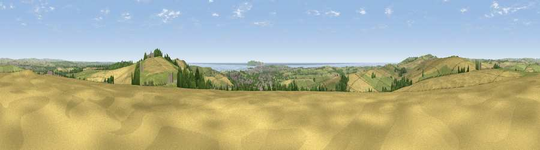

Viewpoint near Upwey
#1918 in England · top 10% of its area beats it · near UpweyThe view, rendered

A 360° render of this exact spot computed from the terrain model, tree cover and land cover — summer colours, afternoon light, calibrated against photographs of famous viewpoints. Real trees, hedges and buildings will differ in detail.
The panorama
Grey silhouette: terrain skyline in each direction (720 bearings, Earth curvature and refraction included). Dashed green: skyline with trees (+15 m) and buildings (+8 m) as obstacles. Blue strip: how far the ground is visible on each bearing.
Where the view opens
Wedge length = distance to the farthest visible ground on that bearing (vegetation-aware). Rings at 10, 25 and 50 km.
What fills the view
44% cropland · 37% grassland · 7% water · 7% woodland · 4% built-up
Angular shares of the visible panorama (visual magnitude), not map area. Landscape diversity 0.55 (0–1 Shannon).
Key numbers
More beautiful places nearby
The staircase of upgrades: each row has a higher view potential than everything closer. Driving times are estimates from straight-line distance, calibrated against real road routing — check an actual route before setting out.
| Place | Direction | Drive | Score |
|---|---|---|---|
| Bincombe Down | ESE · 1 km | ~3 min | 78.6 |
| Viewpoint near Sutton Poyntz | ESE · 3 km | ~6 min | 79.9 |
| Viewpoint near Portesham | WNW · 6 km | ~13 min | 82.7 |
| Viewpoint near Abbotsbury | W · 11 km | ~20 min | 85.1 |
| Viewpoint near Abbotsbury | W · 11 km | ~21 min | 89.0 |
| Viewpoint near West Bexington | W · 12 km | ~22 min | 89.5 |
| The Knoll | W · 13 km | ~24 min | 91.0 |
50.67260, -2.47154 · source: screening · position refined by local search. Computed location — check access rights before visiting.